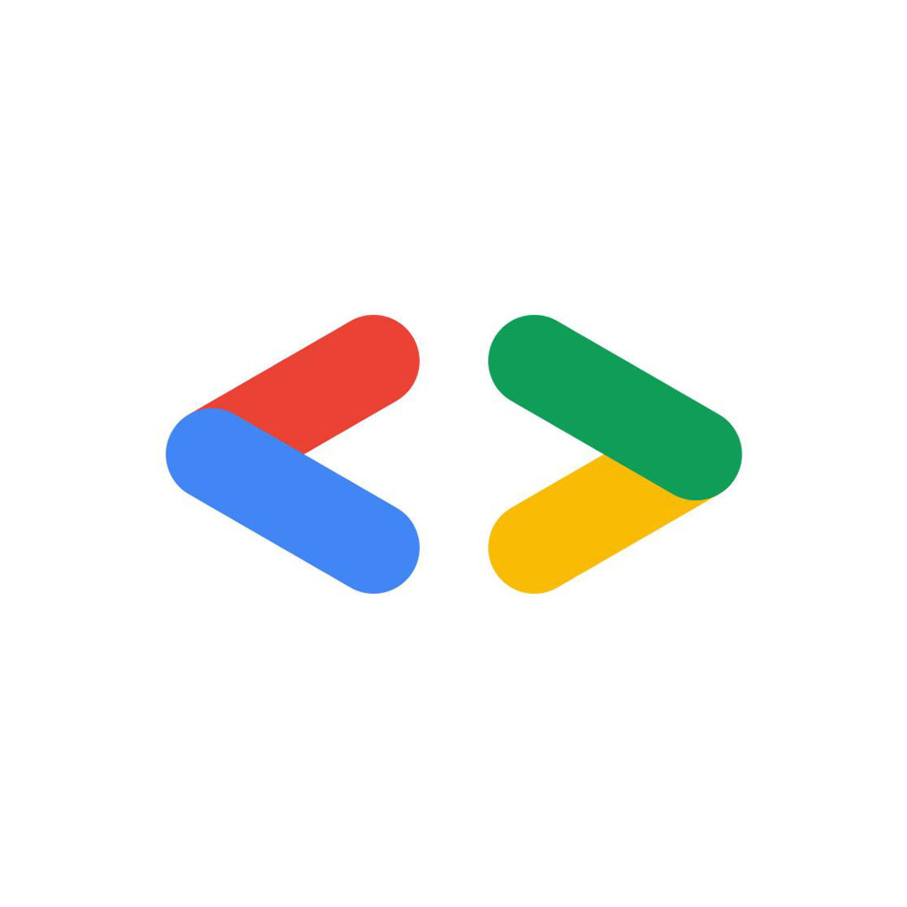

Focused on data science, statistics, and machine learning workflows with a strong emphasis on model validation and business-facing interpretation. Took active responsibility in Datathon and bootcamp projects across high-volume data analysis, model experimentation, and practical output delivery under time and quality constraints.
Computer Engineering Student | Data Science & AI
Muhammet Emin Balmuk
I'm a third-year Computer Engineering student at Marmara University. After completing an intensive 8-month Data Science program at Google AI & Technology Academy, I started focusing on practical AI and analytics projects where model quality, reliable data flow, and measurable impact all matter.
- Google AI Academy Program Completed an 8-month Data Science trainee program with hands-on modeling, analytics, and project delivery (December 2024 - August 2025)
- Bootcamp Finalist Achievement Our AI-integrated health app ranked in the top 3 among 235 teams in the bootcamp challenge
- Large-Scale Datathon Delivery Built analysis workflows on 210,000 rows and delivered high-accuracy predictions on a new 56,000-row dataset
- Real-Time Crypto Scanner Developed a multi-asset architecture that scans 200+ assets in under 2 minutes and tracks active signals in near real time
Experience
Academy, Community, and Program Experience
Strengthening business intelligence capabilities by combining analytical rigor with reporting clarity and decision-support framing. The program reinforces how technical outputs should map to measurable operational value, not just model performance.

Contributing to community-driven project execution as a core member through structured coordination, scoped delivery planning, and sustainable technical contribution. The role supports both engineering depth and cross-team collaboration discipline.
Portfolio
Featured Projects
Crypto Analysis & Trading Bot
A Python-based high-performance algorithmic trading engine that scans 200+ crypto assets in under 2 minutes and generates real-time signals via Telegram.
- Strategy architecture targeting stable 66% win rate and 1:2.5 risk-reward profile
- Automated ML pipeline with LightGBM, CatBoost, and TabNet
- Custom labeling workflow with Google Sheets API and MongoDB-backed logging
Datathon Competition
Team-based data analysis, visualization, and price prediction during Google AI & Technology Academy Datathon.
- Insight extraction on a 210,000-row dataset using Matplotlib and Seaborn
- Model experimentation with LightGBM, Random Forest, and XGBoost
- High-accuracy forecasting on a new 56,000-row evaluation dataset
AI-Integrated Health App
Mobile app for pre-diagnosis support in cognitive disorders such as hyperactivity, dementia, and autism, developed in a 5-person team.
- Ranked in the top 3 among 235 teams in the bootcamp challenge
- Python backend, Dart frontend, Firebase operations, and REST API integration
- Voice pronunciation test module and key security hardening tasks
Real-Time Fire Detection System
YOLO11-based real-time fire and smoke detection system trained on a 95,000-image dataset.
- 82.8% smoke detection and 79.6% fire detection accuracy
- Runs on both live feed and recorded video with bounding-box visualization
- Strong recognition performance on black-and-white footage
Real-Time Chat Application
Team project delivering a real-time messaging platform. I handled Node.js backend development and Socket.io connection orchestration.
- Built with React, Node.js, MongoDB, and Socket.io
- Media storage integration with Cloudinary
- Scalable real-time session and event management approach
Energy Fault Response Simulation
Simulation of fault detection and response for potential large-scale Istanbul power outage scenarios.
- Developed with a 4-person team using Java (Spring Boot), JavaScript, and HTML
- Owned full UI design and supported backend integration
- Applied data structures and algorithms for outage response modeling
Certificates
Learning Journey
- 2025Google AI and Technology Academy Graduation Certificate
- 2025Bootcamp Finalist Certificate of Achievement (Google AI & Technology Academy)
- 2025Google Advanced Data Analytics (Coursera)
- 2025Foundations of Data Science (Google)
- 2025The Nuts and Bolts of Machine Learning (Google)
- 2025Regression Analysis: Simplify Complex Data Relationships (Google)
- 2025Go Beyond the Numbers: Translate Data into Insights (Google)
- 2025The Power of Statistics (Google)
- 2025Get Started with Python (Google)
- 2025Foundations of Project Management (Google)
- 2022Deutsches Sprachdiplom 1 - Kultusministerkonferenz
Contact